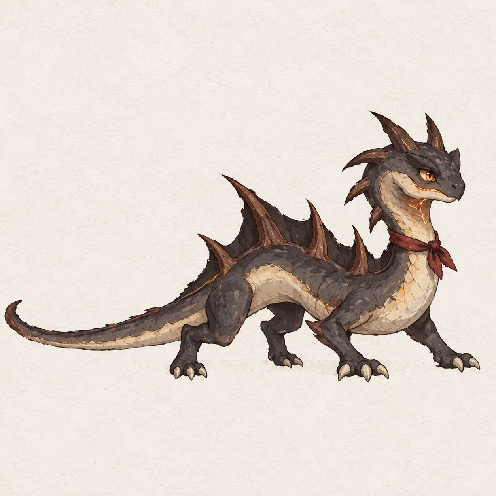
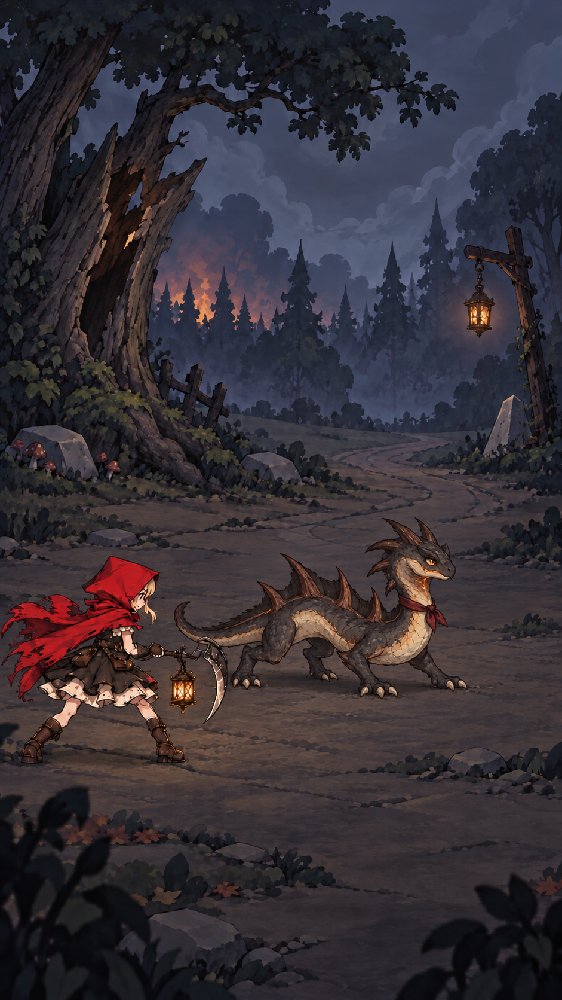
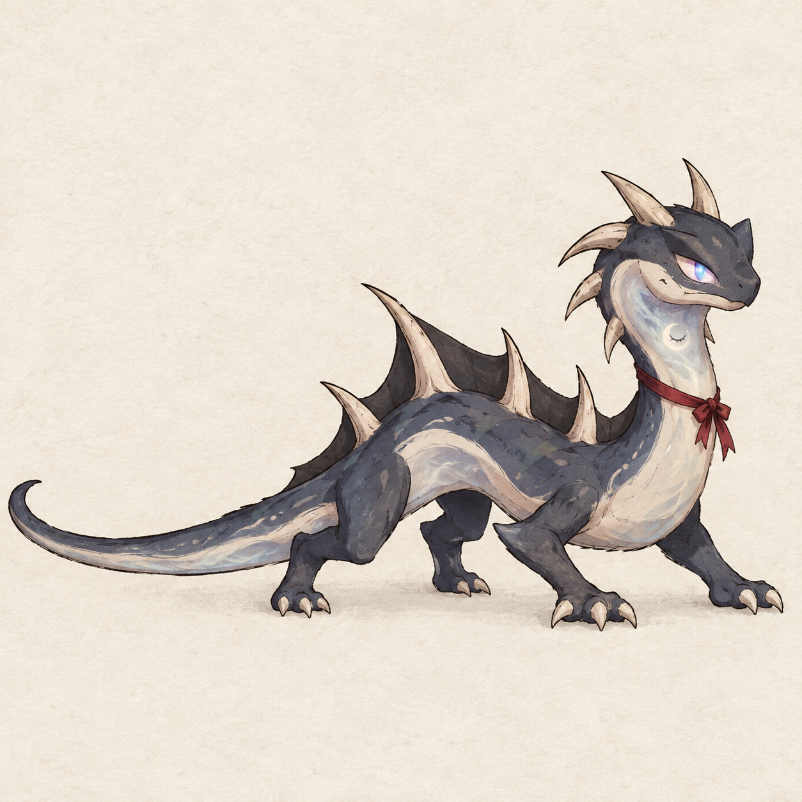
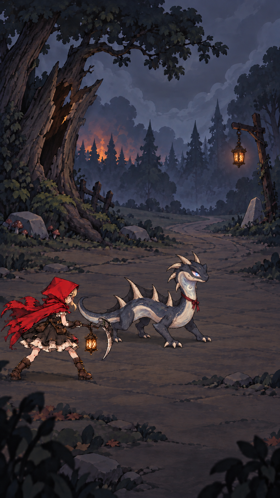
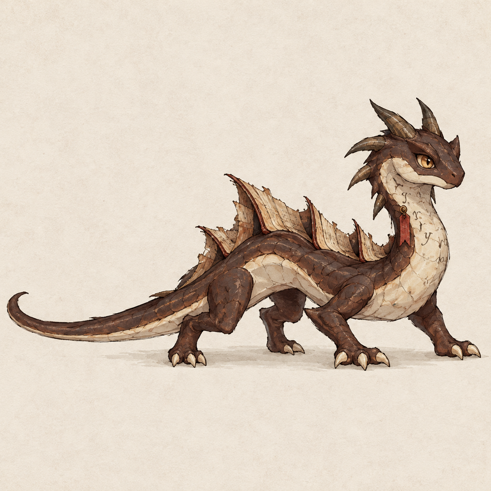
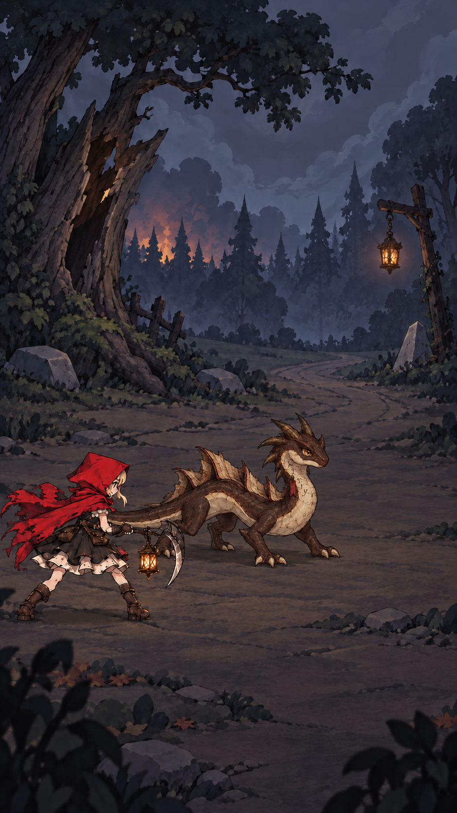

A · 守烬幼龙
余烬喉光 · 炭灰鳞皮 · 温暖的保护者（推荐）


Cindrel 替换设计 · 三套备选，尚未选定。以下均为概念图，非 Unity 实景。
余烬喉光 · 炭灰鳞皮 · 温暖的保护者（推荐）


闭眼月印 · 烟蓝灰 · 安静而诡异


书页背棘 · 旧皮革 · 活化童话书


需按伙伴接口适配普通攻击、强化吐息及地面退场。三套体量有轻微生成差异，最终以实战校准。
设计与适配说明 · 真实提示词与参考来源